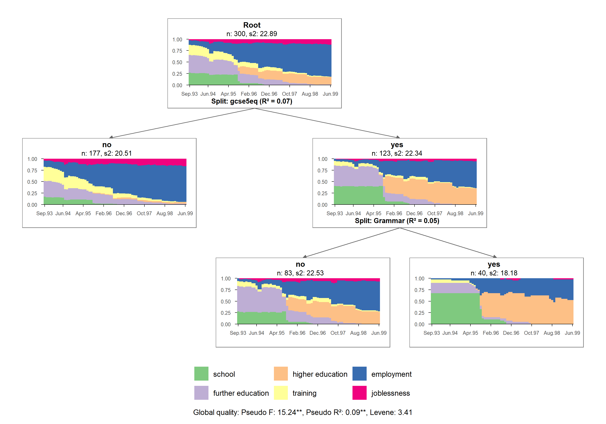
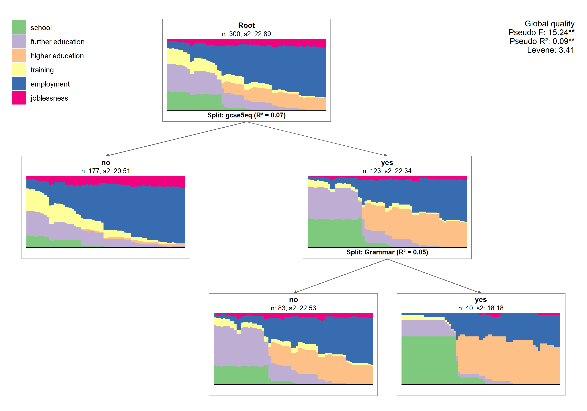
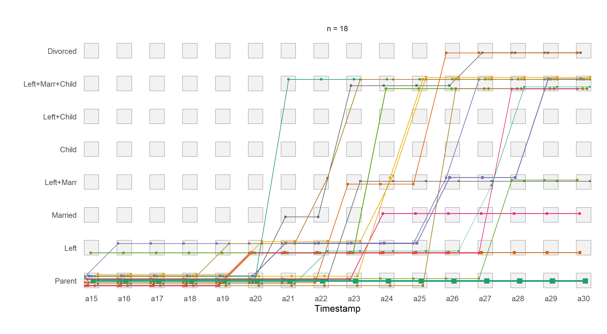
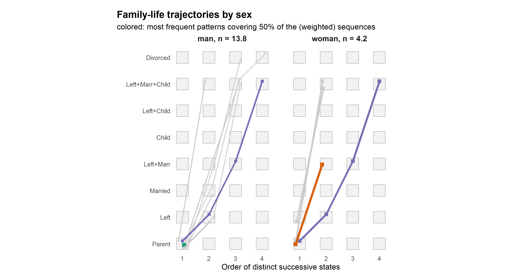
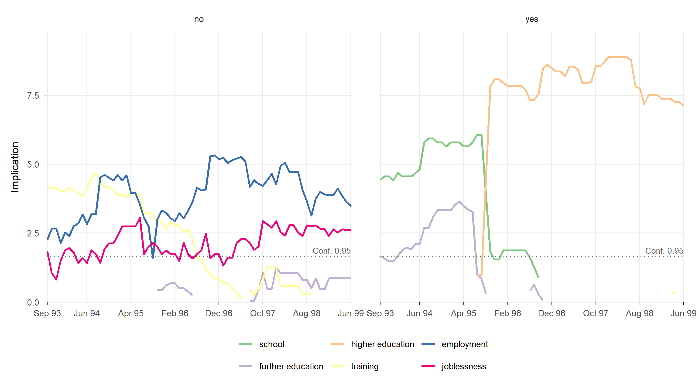
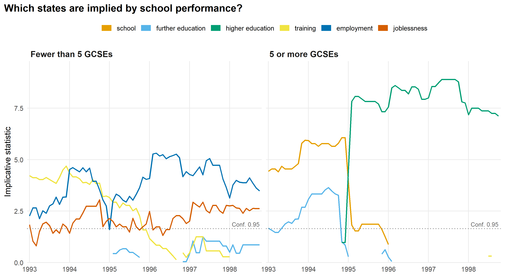

![]()
library(TraMineR)
library(ggseqplot)
library(ggplot2)
data(mvad)
set.seed(1)
mvad <- mvad[sample(nrow(mvad), 300), ]
## State properties: alphabet, short and long labels,
## ordered from education via training to the labor market
mvad.alphabet <- c("school", "FE", "HE", "training", "employment", "joblessness")
mvad.lab <- c("school", "further education", "higher education",
"training", "employment", "joblessness")
mvad.shortlab <- c("SC", "FE", "HE", "TR", "EM", "JL")
mvad.seq <- seqdef(mvad[, 17:86], alphabet = mvad.alphabet,
states = mvad.shortlab, labels = mvad.lab, xtstep = 6)For several years now, Emanuela Struffolino and I have been teaching “Sequence Analysis” in the amazing GESIS Workshops program. Before each course, we send the participants instructions on which software to install in advance. One part of this setup is GraphViz, which TraMineR::seqtreedisplay requires to render tree-structured plots. Quite regularly, installing GraphViz, and sometimes also getting it to work with R, causes some hiccups. For this reason, I had long planned to add a GraphViz-free function for this type of plot to {ggseqplot}. However, the package is just a small side project, and I am not a very skilled programmer. So this plot type, like a few others I wanted to add, never made it into the package. Over the years, the package was maintained but not really improved. AI tools, on the other hand, have improved quite dramatically during the same time.
Nudged by this year’s iteration of our course, I therefore decided to use Claude Code to help me implement the missing plot functions. This was the first time I used AI tools to work on the package, and I have to admit it was a very pleasant experience. I am pretty sure that without this powerful tool, I would not have added these long-missing functions to the package.
Version 1.0.0 of {ggseqplot} is now on CRAN and adds three new plot types:
ggseqtreeplot()renders regression trees of sequences (TraMineR::seqtree) — without requiring GraphViz, whichTraMineR::seqtreedisplayneeds.ggseqpcplot()draws decorated parallel coordinate plots, reproducingTraMineR::seqpcplot.ggseqimplicplot()plots the implicative statistic computed withTraMineRextras::seqimplic.
This post briefly shows the three functions and how their appearance can be adjusted. See the NEWS file for all changes.
Example data
We use a sample of 300 school-to-work trajectories from the well-known mvad data in {TraMineR}.
Regression tree plots
First, we grow a regression tree of the sequences with TraMineR::seqtree, using Hamming distances and four covariates.
mvad.diss <- seqdist(mvad.seq, method = "HAM")
mvad.tree <- seqtree(mvad.seq ~ male + Grammar + funemp + gcse5eq,
data = mvad, diss = mvad.diss, R = 100, max.depth = 3)Default output
By default, every node of the tree shows a state distribution plot (type = "d"), and the legend and the global quality measures of the tree are placed below the tree.
ggseqtreeplot(mvad.tree)
Other node plots are available via type, e.g. index plots ("i"), sequence frequency plots ("f"), modal state plots ("ms") or mean time plots ("mt").
Adjusting the node plots
The node plots are drawn as images onto the tree. Hence, they cannot be changed afterwards with +. Instead, scales, themes and other ggplot components for all node plots are passed to the node.layers argument. The tree as a whole — legend, title, quality measures — can be adjusted with the usual {ggplot2} functions.
The following plot comes closer to the look of TraMineR::seqtreedisplay: the node plots have no axis labels, the legend is placed in the upper left corner, and the goodness-of-fit measures (printed in separate lines with quality.multiline = TRUE) in the upper right corner. Since the axis labels are removed, plot.margin is required to even out the space around the node plots.
ggseqtreeplot(mvad.tree, quality.multiline = TRUE,
node.layers = theme(axis.text = element_blank(),
axis.ticks = element_blank(),
axis.line = element_blank(),
plot.margin = margin(4, 6, 4, 6))) +
theme(# global quality measures (rendered as plot tag) in the upper right corner
plot.tag.location = "panel",
plot.tag.position = c(1, 1),
plot.tag = element_text(size = 10, hjust = 1, vjust = 1),
# legend in the upper left corner, one entry per line
legend.position = "inside",
legend.position.inside = c(0, 1),
legend.justification = c(0, 1),
legend.direction = "vertical")
For large trees, I recommend saving the plot with a generous size, e.g. ggsave("tree.png", width = 14, height = 9).
Decorated parallel coordinate plots
Decorated parallel coordinate plots (Bürgin & Ritschard, 2014, doi:10.1080/00031305.2014.887591) draw each distinct sequence as a line connecting its successive states. The size of the squares and the width of the lines are proportional to the (weighted) number of sequences following a pattern. As in the TraMineR::seqpcplot examples, we use the first 20 weighted family-life sequences of the biofam data (ages 15 to 30; sum of weights = 18).
data(biofam)
lab <- c("Parent", "Left", "Married", "Left+Marr", "Child", "Left+Child",
"Left+Marr+Child", "Divorced")
biofam.seq <- seqdef(data = biofam[, 10:25], labels = lab,
weights = biofam$wp00tbgs)
biofam.seq <- biofam.seq[1:20, ]Default output
With order.align = "time", the x-axis shows the sequence position at which a state is observed. In the example, the position corresponds to the respondent’s age.
ggseqpcplot(biofam.seq, order.align = "time")
Distinct successive states and highlighted patterns
All arguments of TraMineR::seqpcplot that affect the computation can be passed on via .... Below, order.align = "first" aligns the distinct successive states (DSS) instead of time, group produces one plot per sex, and the filter argument colors only the most frequent patterns that together cover 50% of the sequences, while the remaining ones are grayed out. Titles and labels are changed with the usual {ggplot2} functions.
ggseqpcplot(biofam.seq, order.align = "first", group = biofam$sex[1:20],
filter = list(type = "function", value = "cumfreq", level = 0.5),
seed = 2, linewidth = 1.5) +
labs(title = "Family-life trajectories by sex",
subtitle = "colored: most frequent patterns covering 50% of the (weighted) sequences",
x = "Order of distinct successive states") +
theme(plot.title.position = "plot",
plot.title = element_text(face = "bold", size = 14),
strip.text = element_text(face = "bold", size = 11))
Implicative statistic
The implicative statistic (TraMineRextras::seqimplic) shows how strongly membership in a group implies being in a certain state at a given position. Here we compare young people with and without five or more GCSE passes at grade C or higher (gcse5eq) using the mvad.seq defined above.
Default output
ggseqimplicplot(mvad.seq, group = mvad$gcse5eq)
Values above the dotted reference line indicate that the implication is significant at the 95% level.
Design adjustments
Because the result is a regular ggplot, its appearance can be changed with common {ggplot2} commands. In the example, we specify yearly axis labels, add more informative facet titles, apply the colorblind-friendly Okabe-Ito palette (via {paletteer}), request a one-row legend with thicker keys, and use a larger base font size (theme_minimal() is already the default theme of the function).
library(paletteer)
ggseqimplicplot(mvad.seq, group = mvad$gcse5eq, linewidth = 0.8) +
scale_x_continuous(breaks = seq(1, 70, by = 12), labels = 1993:1998,
expand = expansion(mult = 0.01)) +
scale_color_paletteer_d("colorblindr::OkabeIto") +
# legend in one row; thicker lines in the legend keys
guides(color = guide_legend(nrow = 1, override.aes = list(linewidth = 4))) +
facet_wrap(~group, labeller = as_labeller(c(no = "Fewer than 5 GCSEs",
yes = "5 or more GCSEs"))) +
labs(title = "Which states are implied by school performance?",
x = NULL, y = "Implicative statistic", color = NULL) +
theme_minimal(base_size = 12) +
theme(legend.position = "top",
panel.grid.minor = element_blank(),
strip.text = element_text(face = "bold", hjust = 0, size = 12),
plot.title.position = "plot",
plot.title = element_text(face = "bold"))
Further information
{ggseqplot}website with reference pages and a vignette (which does not yet cover the new functions)- Issues and feature requests: https://github.com/maraab23/ggseqplot/issues
Copyright and license
© 2026 Marcel Raab
This post is licensed under a Creative Commons Attribution 4.0 International License (CC BY 4.0).
How to cite
BibTeX citation:
@misc{raab2026,
author = {Raab, Marcel},
title = {Ggseqplot 1.0.0 on {CRAN}},
date = {2026-10-23},
url = {https://maraab23.github.io/SAA-Website/blog/posts/2026-10-23-ggseqplot-1-0-0/},
langid = {en}
}
Please cite this post as:
Raab, M. (2026, October 23). ggseqplot 1.0.0 on CRAN. Sequence
Analysis Association Blog. https://maraab23.github.io/SAA-Website/blog/posts/2026-10-23-ggseqplot-1-0-0/